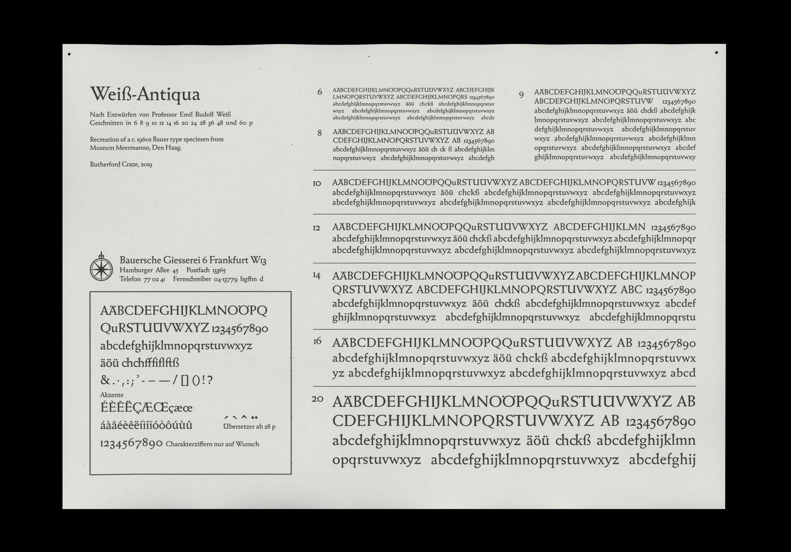

A revival of the 1928 typeface by Emil Rudolf Weiß (2018)
Part of my first semester studies at TypeMedia. I worked on a digitisation of Weiß-Antiqua, a distinctive typeface cut at the Bauer’sche Gießerei in Frankfurt, 1928.

Specimen · Facsimile of a 1960s specimen using my version of the typeface.